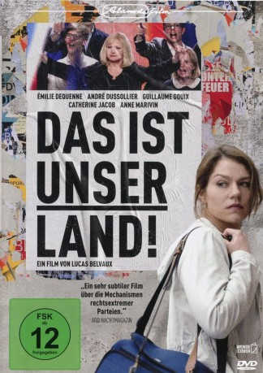

#8124 Das Ist unser Land!
 
 IMDB-Wertung: 6.4 / 10
IMDB-Wertung: 6.4 / 10  Metascore: 61
Metascore: 61 
Pauline Duhez (Émilie Dequenne) arbeitet als Krankenschwester in einer Kleinstadt im strukturschwachen Norden Frankreichs. Sie kümmert sich um ihren Vater und zieht ihre beiden Kinder alleine groß. Sympathisch und aufopferungsvoll wie sie ist, wird sie von allen gemocht. Ihre Glaubwürdigkeit will sich eine aufstrebende nationalistische Partei zu Nutze machen und wirbt sie als Kandidatin für die kommenden Bürgermeisterwahlen an. Der charismatische Arzt Dr. Philippe Berthier (André Dussollier) umschmeichelt Pauline und überredet sie zu kandidieren. In ihrem Beruf täglich mit sozialen Missständen konfrontiert, lässt sie sich von seinen populistischen Ansichten mitreißen, in der Hoffnung, in der Lokalpolitik etwas bewirken zu können. Ihr sozialistisch geprägter Vater ist bestürzt über den Gesinnungswandel seiner Tochter. Und diese muss bald erkennen, dass sie nur als hübsches Gesicht der landesweiten Wahlkampagne von Parteichefin Agnès Dorgelle (Catherine Jacob) dienen soll...
Jahr: 2017
Dauer: 117 Minuten
FSK: 12
Land: Frankreich Studio: Alamode FilmTonspuren: DD5.1 - ,
Untertitel: Deutsch,
Auflösung: 1080p (1920x808) Größe: 8509 MB
Genre: Drama
Regisseur: Lucas Belvaux
Drehbuch: Lucas Belvaux
Soundtrack: Frédéric Vercheval
Darsteller:
- Émilie Dequenne als Pauline Duhez
 André Dussollier als Philippe Berthier
André Dussollier als Philippe Berthier Guillaume Gouix als Stéphane Stankowiak, dit Stanko
Guillaume Gouix als Stéphane Stankowiak, dit Stanko- Catherine Jacob als Agnès Dorgelle
 Anne Marivin als Nathalie Leclerc
Anne Marivin als Nathalie Leclerc Patrick Descamps als Jacques Duhez
Patrick Descamps als Jacques Duhez- Stéphane Caillard als Victoire Vasseur
- Jean-Louis Sbille als M. Biaggi
- Charlotte Talpaert als Nada Belisha
- Mateo Debaets als Tom
- Coline Marcourt als Lili
- Corentin Lobet als Yo
- Thibault Roux als Max
- Michel Ferracci als Dominique Orsini
- Cyril Descours als Jean-Baptiste Verhaeghe
- Julien Roy als Bernard Tovi
- Bernard Mazzinghi als Alexandre de Mareuil
- Gérard Dubouche als François Marcillac
- Bernard Eylenbosch als Erwann
- Christophe Moyer als Eric
- Tom Robelin als Cyril
- Manon Wathelier als Anaïs
- Ludovic Molière als Jean
- Evelyne El Garby Klaï als Madame Oumaouche
- Iman Amara-Korba als Djamila Oumaouche
- Jeannine Le Gru als Madame Rolin
Datei: X:\2017(G-M)\Ist unser Land!, Das (2017, FSK12, 1920x808).mkv seit 29.01.2018
Festplatte: HD 2017(A-Z)-2018(A-F)
 Es gibt insgesamt 148 Filme in der Gruppe '2017(G-M)'
Es gibt insgesamt 148 Filme in der Gruppe '2017(G-M)'